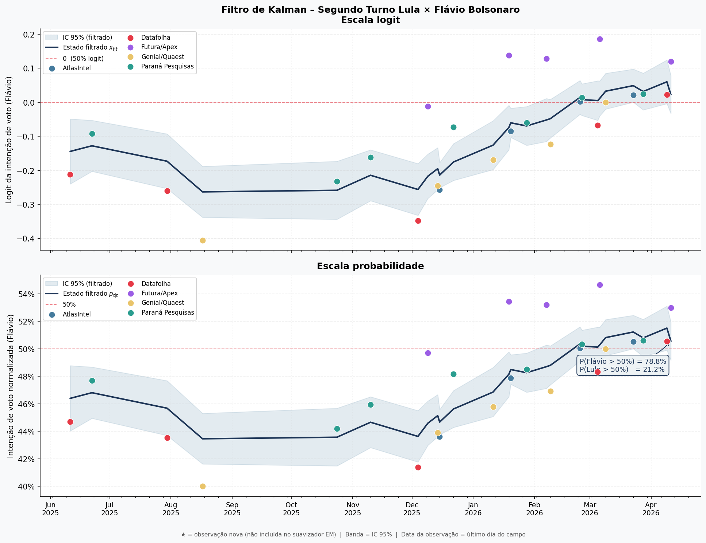

Filtro de Kalman com vieses por instituto · Banda = IC 95% · Pontos = observações brutas ajustadas
📐 Modelo de Espaço de Estados com Filtro de Kalman
As estimativas são produzidas por um modelo de espaço de estados onde a intenção de voto latente evolui como um passeio aleatório na escala logit. Cada pesquisa é incorporada como observação ruidosa, com variância proporcional ao erro amostral e ajustada pela fração de indecisos. Vieses sistemáticos por instituto são estimados via algoritmo EM e mantidos fixos na filtragem online. Os parâmetros são re-estimados mensalmente; as pesquisas são coletadas a cada 6 horas.
📥 Nota Técnica Completa (PDF)📚 Fonte dos Dados
Pesquisas coletadas automaticamente da Wikipedia (PT) — Pesquisas de opinião para a eleição presidencial no Brasil em 2026. Institutos utilizados: Datafolha, Paraná Pesquisas, Genial/Quaest, AtlasIntel e Futura/Apex. As intenções de voto são normalizadas para excluir indecisos, brancos e nulos, e a data de cada pesquisa corresponde ao último dia de campo.
💬 Sugestões e Críticas
Este é um projeto em desenvolvimento contínuo. Sugestões metodológicas, críticas, apontamento de erros e propostas de melhoria são muito bem-vindos — são elas que fazem o projeto evoluir. Entre em contato diretamente com o autor:
✉️ joaquimacbermudes@gmail.com
Manter o servidor rodando, os dados atualizados e o modelo melhorando leva tempo.
Se o agregador foi útil para você — para uma análise, um artigo, ou simplesmente
para acompanhar as eleições — considere contribuir com qualquer valor via PIX.
Passando o chapéu...